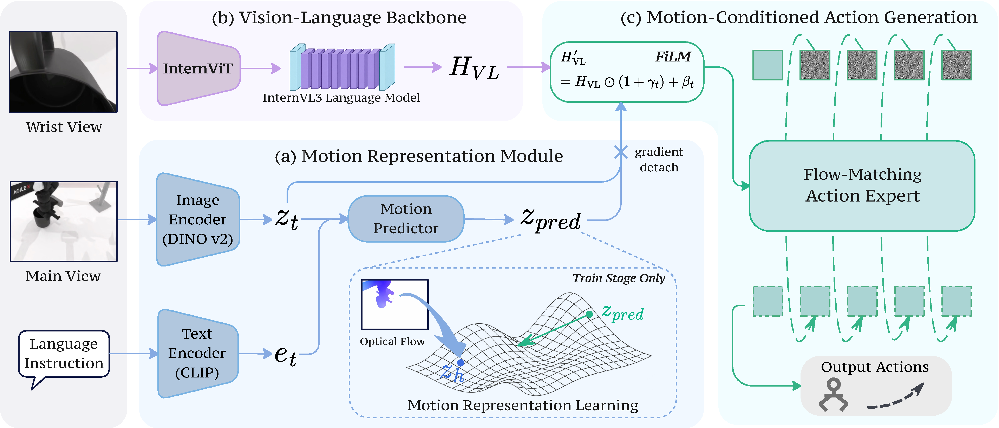
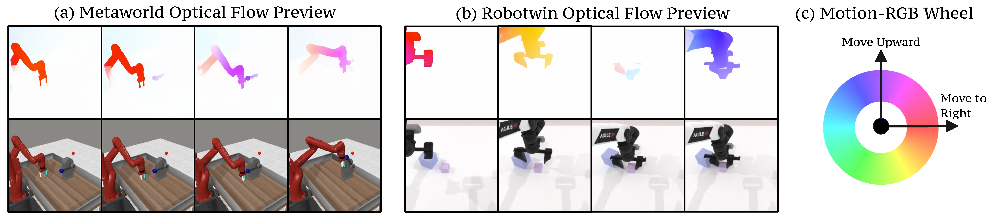

Vision-Language-Action · Future-Motion Prediction
A lightweight vision-language-action model that augments policy learning with future motion prediction through optical-flow supervision — a task-relevant predictive signal focused on motion rather than appearance.
1 School of AI, Shanghai Jiao Tong University ·
2 Zhejiang University ·
3 UESTC ·
4 QuicRobot
★ Equal contribution · † Corresponding author
·
zilezhong2005@gmail.com ·
bo.zhao@sjtu.edu.cn
Abstract
Vision-language-action (VLA) models provide a unified framework for visual understanding, language grounding, and robot control, yet anticipating how the scene will evolve beyond the current observation can provide additional information for control. Action supervision alone does not explicitly encourage such anticipation, while future-image prediction entangles task-relevant motion with largely static appearance.
We introduce Evo-World, a lightweight VLA model that augments policy learning with future motion prediction through optical-flow supervision, providing a task-relevant predictive signal focused on motion rather than appearance. We design the training procedure to preserve these predictive representations during policy learning — regulating representation diversity while decoupling representation learning from action optimization.
Across simulation benchmarks, Evo-World achieves a tier-averaged success rate of 91.1% on Meta-World MT50, a 13.0% relative improvement over the non-predictive baseline. On real-world AgileX robots it outperforms the evaluated baselines across single-arm and bimanual tasks while using only 0.87B parameters, with lower GPU memory and higher inference efficiency.
Method

DINOv2 (image) + CLIP (text) encoders feed an MLP that predicts a latent motion representation zpred. The target is a DINOv2 encoding of a RAFT optical-flow rendering (current → frame 15 steps ahead), used only during training.
InternViT encodes the camera views into visual tokens; the InternVL3-1B LLM fuses them with the instruction into HVL — the visual and linguistic context for action generation.
FiLM derives bounded, zero-initialized scale/shift from the current and predicted representations (stop-gradient) and modulates the tokens; a flow-matching action expert emits the action chunk.
A world loss (prediction + SIGReg regularization against representation collapse) plus a flow-matching action loss, combined in a single joint objective. Gradient separation keeps the motion branch trained by its own signal.

Results
Tier scores and their equal-weight average for Meta-World; Clean / Random / average for RoboTwin. Best in bold, second-best underlined; “–” = not reported.
| Method | Params | Pretrain | Meta-World MT50 | RoboTwin | ||||||
|---|---|---|---|---|---|---|---|---|---|---|
| Easy | Medium | Hard | V. Hard | Avg | Clean | Random | Avg | |||
| DP | 0.1B | No | 23.1 | 10.7 | 1.9 | 6.1 | 10.5 | 28.0 | 0.6 | 14.3 |
| ACT | 0.08B | No | – | – | – | – | – | 29.7 | 1.7 | 15.7 |
| RDT | 1.2B | Yes | – | – | – | – | – | 34.5 | 13.7 | 24.1 |
| starVLA | 4.68B | No | 85.7 | 60.0 | 46.7 | 44.0 | 59.1 | 46.5 | 3.2 | 24.8 |
| DP3 | 0.26B | No | – | – | – | – | – | 55.2 | 5.0 | 30.1 |
| π₀ | 3.5B | Yes | 71.8 | 48.2 | 41.7 | 30.0 | 47.9 | 46.4 | 16.3 | 31.4 |
| AHA-WAM | 7.35B | No | – | – | – | – | – | 64.3 | 3.2 | 33.8 |
| GalaxeaVLA | 2.86B | Yes | – | – | – | – | – | 62.7 | 12.7 | 37.7 |
| Xiaomi Robotics-0 | 6.7B | Yes | – | – | – | – | – | 62.9 | 18.2 | 40.5 |
| SmolVLA | 2.25B | No | 87.1 | 51.8 | 70.0 | 64.0 | 68.2 | – | – | – |
| RoboTron-Mani | 4B | Yes | 85.5 | 67.7 | 76.7 | 81.0 | 77.7 | – | – | – |
| Evo-1 | 0.77B | No | 89.2 | 76.8 | 77.2 | 79.2 | 80.6 | 65.7 | 12.5 | 39.1 |
| Evo-Depth | 0.9B | No | 83.1 | 84.7 | 87.3 | 82.4 | 84.4 | – | – | – |
| LA4VLA | 1.0B | Yes | 88.9 | 94.5 | 66.7 | 100.0 | 87.5 | – | – | – |
| FabriVLA | 0.88B | No | 95.0 | 88.2 | 86.7 | 90.0 | 90.0 | – | – | – |
| Evo-World (Ours) | 0.87B | No | 93.2 | 89.1 | 88.3 | 94.0 | 91.1 | 67.1 | 16.5 | 41.8 |
With ~0.87B parameters and no robot-data pretraining, Evo-World tops the Meta-World tier average and the RoboTwin average — above larger, robot-pretrained baselines such as π₀ (3.5B) and LA4VLA (1.0B).
Real-world
20 trials per task, same NVIDIA H20 GPU in BF16. Best bold, second-best underlined.
| Metric / Task | OpenVLA-OFT | π₀ | Evo-World (Ours) |
|---|---|---|---|
| Params (B) ↓ | 7.73 | 3.50 | 0.87 |
| GPU memory (GB) ↓ | 15.56 | 6.69 | 2.54 |
| Inference freq. (Hz) ↑ | 2.41 | 5.42 | 6.16 |
| Floral arrangement ↑ | 25.0 | 40.0 | 55.0 |
| Mug hanging ↑ | 25.0 | 55.0 | 70.0 |
| Microwave placement ↑ | 20.0 | 60.0 | 65.0 |
| Average success rate | 23.3 | 51.7 | 63.3 |
Highest success on all three tasks (63.3% avg), while using 62.0% less GPU memory and running 13.7% faster than π₀ under the same deployment settings.
Citation
@misc{zhong2026evoworldlightweightvisionlanguageactionmodel,
title = {Evo-World: A Lightweight Vision-Language-Action Model with
Future Motion Prediction via Optical-Flow Supervision},
author = {Zile Zhong and Yuxin Du and Tao Lin and Haoxiao Wang and
Wei Dai and Binhua Zuo and Bo Zhao},
year = {2026},
eprint = {2610.12936},
archivePrefix = {arXiv},
primaryClass = {cs.RO},
url = {https://arxiv.org/abs/2610.12936}
}